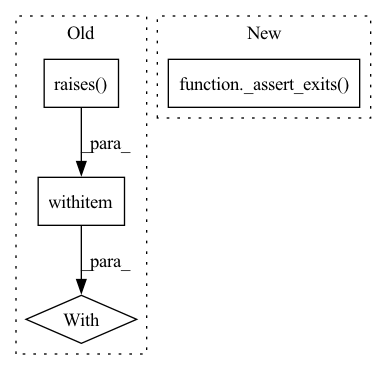

Pattern ID :12948
Before Change
)
args_bs = deepcopy(args)
args_bs.batch_size = 0
with pytest.raises(ValueError):
_start_prediction_or_training(args_bs)
args_out = deepcopy(args)
args_out.out = existing_file
with pytest.raises(FileExistsError):After Change
_assert_exits(_start_prediction_or_training, args_confidence)
args_confidence.confidence_threshold = 1.000001
_assert_exits( _start_prediction_or_training, args_confidence)
def test_training_cmd_line_invocation():
outdir = tempfile.mkdtemp(prefix="deepnog_test_")In pattern: SUPERPATTERN
Frequency: 3
Non-data size: 4
Instances Fragment ID: 43616985
Project Name: univiecube/deepnog
Commit Name: 81662c22ea9fe0ee79b7d159d52992c0f8172b58
Time: 2020-07-07
Author: sci@feldbauer.org
File Name: deepnog/tests/test_cli.py
M Class Name: AnonimousClass
N Class Name: AnonimousClass
M Method Name: test_args_sanity_check(0)
N Method Name: test_args_sanity_check(0)
M Parent Class:
N Parent Class:
M File Name: deepnog/tests/test_cli.py
N File Name: deepnog/tests/test_cli.py
M Start Line: 128
M End Line: 154
N Start Line: 134
N End Line: 158
Before Change
def test_set_device():
device = "tpu"
msg = f"Unknown device "{device}". Try "auto"."
with pytest.raises(ValueError, match=msg):
set_device(device)
def test_auto_device():After Change
def test_set_device(caplog):
device = "tpu"
with caplog.at_level(logging.ERROR):
_assert_exits( set_device, device)
// FIXME. Currently only the exit status is tested, not the message.
// msg = f"Unknown device "{device}". Try "auto"."
// assert msg in caplog.text
Fragment ID: 43616989
Project Name: univiecube/deepnog
Commit Name: 03d49fd0c85b4c20a78b9052a5c6d34abf40839a
Time: 2020-08-11
Author: sci@feldbauer.org
File Name: deepnog/utils/tests/test_utils.py
M Class Name: AnonimousClass
N Class Name: AnonimousClass
M Method Name: test_set_device(1)
N Method Name: test_set_device(0)
M Parent Class:
N Parent Class:
M File Name: deepnog/utils/tests/test_utils.py
N File Name: deepnog/utils/tests/test_utils.py
M Start Line: 20
M End Line: 25
N Start Line: 26
N End Line: 34
Before Change
def test_gpu_device_unavailable():
device = "gpu"
msg = "could not access any CUDA-enabled GPU"
with pytest.raises(RuntimeError, match=msg):
set_device(device)
@pytest.mark.xfail(reason=("BUG: pytest logging capture does not work. "After Change
def test_gpu_device_unavailable(caplog):
device = "gpu"
with caplog.at_level(logging.ERROR):
_assert_exits( set_device, device)
// FIXME. Currently only the exit status is tested, not the message.
// msg = "could not access any CUDA-enabled GPU"
// assert msg in caplog.text
Fragment ID: 43616980
Project Name: univiecube/deepnog
Commit Name: 03d49fd0c85b4c20a78b9052a5c6d34abf40839a
Time: 2020-08-11
Author: sci@feldbauer.org
File Name: deepnog/utils/tests/test_utils.py
M Class Name: AnonimousClass
N Class Name: AnonimousClass
M Method Name: test_gpu_device_unavailable(1)
N Method Name: test_gpu_device_unavailable(0)
M Parent Class:
N Parent Class:
M File Name: deepnog/utils/tests/test_utils.py
N File Name: deepnog/utils/tests/test_utils.py
M Start Line: 45
M End Line: 50
N Start Line: 53
N End Line: 61